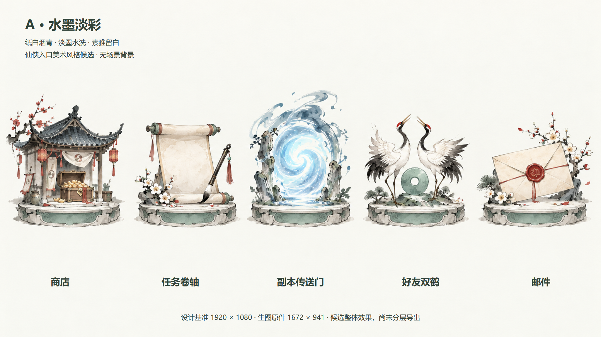
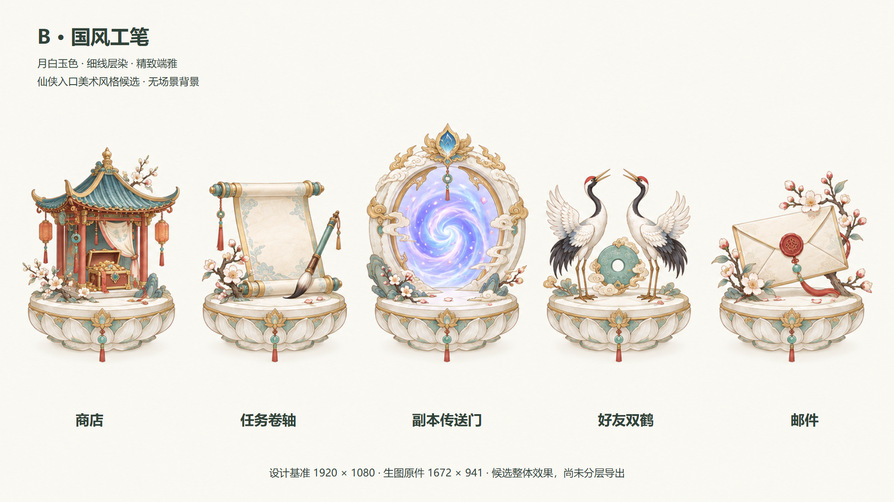
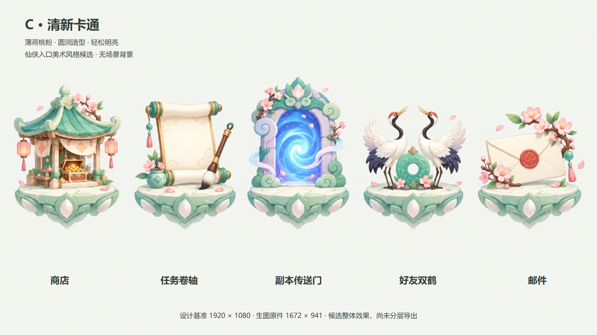
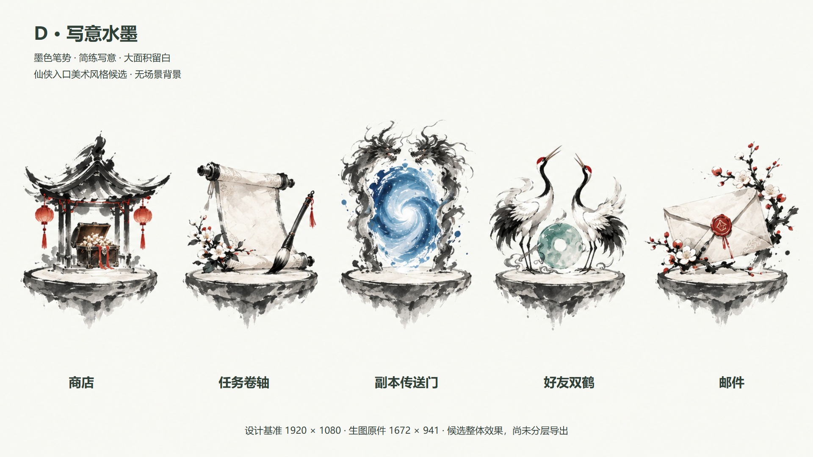
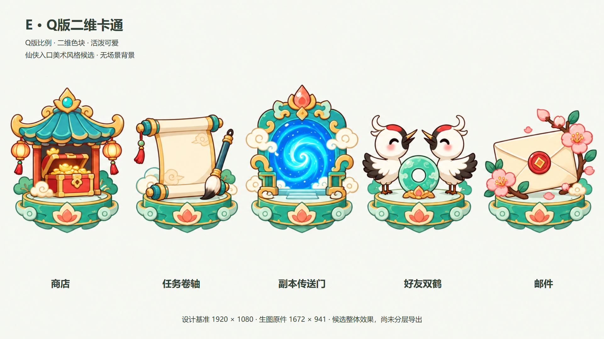
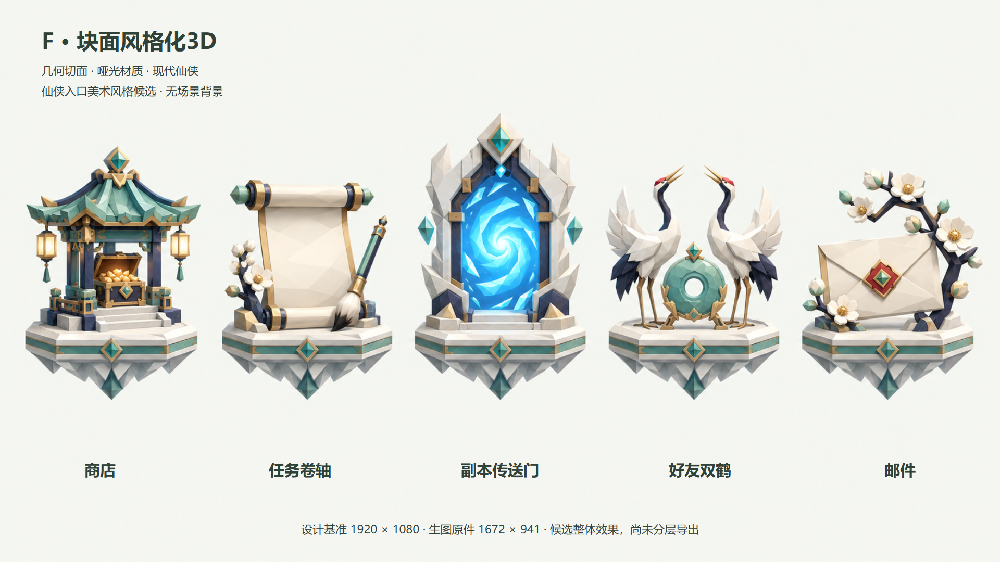

仙侠入口美术 · 不同风格对比
相同的五个功能与中性底色，分别改变笔触、材质、配色和底座造型。名称置于图下方；风格文字已独立记录，便于选定后生产。
A · 水墨淡彩
纸白烟青 · 淡墨水洗 · 素雅留白

打开1920×1080检查页 · 文字风格档案 · 生图原件
B · 国风工笔
月白玉色 · 细线层染 · 精致端雅

打开1920×1080检查页 · 文字风格档案 · 生图原件
C · 清新卡通
薄荷桃粉 · 圆润造型 · 轻松明亮

打开1920×1080检查页 · 文字风格档案 · 生图原件
D · 写意水墨
墨色笔势 · 简练写意 · 大面积留白

打开1920×1080检查页 · 文字风格档案 · 生图原件
E · Q版二维卡通
Q版比例 · 二维色块 · 活泼可爱

打开1920×1080检查页 · 文字风格档案 · 生图原件
F · 块面风格化3D
几何切面 · 哑光材质 · 现代仙侠

打开1920×1080检查页 · 文字风格档案 · 生图原件